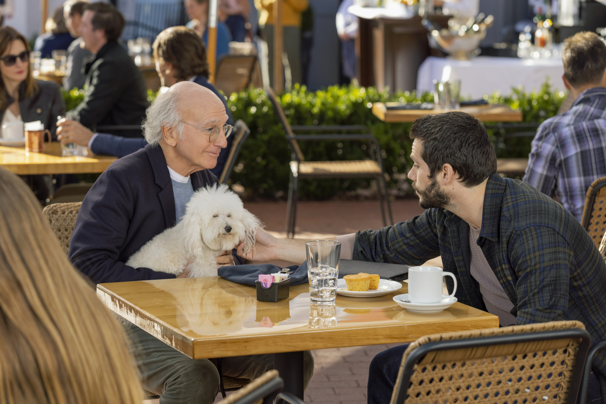

Today was such a fun day for Larry and Angel Muffin. They got to spend some quality time
at the park. Angel Muffin was a good boi,
despite the fact that he kept wanting to smell people's feet.
Way to go Angel Muffin!

Larry and Angel Muff
Larry and Angel Muffin will never forget the day they had. Bravo Larry!